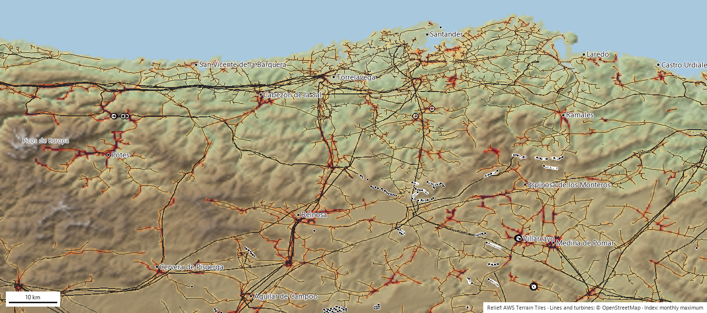
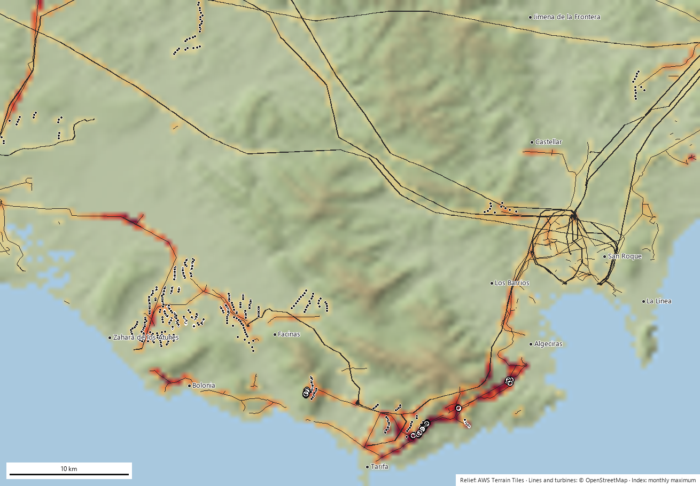

Projet ouvert · septembre 2026 · version 0.1
Une carte dynamique du risque de collision et d’électrocution des oiseaux : elle croise les lignes électriques et les éoliennes (OpenStreetMap et, en France, les données ouvertes d’Enedis) avec les lieux et les périodes où se trouvent les oiseaux (données eBird et GBIF, suivi GPS de Movebank) et avec le relief, pour décider quel poteau, quel tronçon ou quelle éolienne corriger en priorité.
Elle produit un indice par maille de 500 m, par espèce et par mois, et un classement des poteaux, tronçons et éoliennes à vérifier en urgence. Le calcul est refait chaque mois. Tout le code et toutes les données produites sont publics. Né en Espagne, le projet s’étend à la France : cinq régions pilotes (la Crau, la Camargue, les Grands Causses, les Pyrénées occidentales et la Champagne humide) forment une première vague, calculée : 67 595 éléments notés en octobre 2026, à voir sur la page des régions.
Chiffres d’octobre 2026. En Espagne, les 49 105 éléments notés de la page des régions sont la somme de 43 172 poteaux, 4 954 tronçons et 979 éoliennes. OpenStreetMap compte 49 003 poteaux dans les deux régions espagnoles, mais ceux du réseau de transport (plus de 66 kV) ne sont pas notés un par un : ils n’électrocutent pas les oiseaux (leurs câbles sont très écartés) et leur risque de collision est déjà porté par le tronçon de ligne.
Les lignes de distribution électrocutent les oiseaux qui se posent sur leurs poteaux ; les câbles et les pales des éoliennes les percutent en vol. Ce sont, en Espagne, les premières causes de mortalité non naturelle chez les grands rapaces et les oiseaux planeurs ; le problème est le même sur le réseau HTA français.
L’oiseau se pose sur la traverse et touche deux phases, ou une phase et la terre. Tout dépend de l’armement du poteau, du type d’isolateur et de la présence de dérivations ou d’interrupteurs. Sont touchés vautours, aigles, cigognes, milans et grand-duc d’Europe.
Oiseaux peu manœuvrants ou volant en groupe, à l’aube et au crépuscule : grues cendrées, cigognes, spatules blanches, hérons cendrés, outardes. C’est pire sur les versants, les cols et les couloirs de migration.
Les planeurs qui exploitent les mêmes ascendances qui justifient le parc éolien : vautour fauve, vautour percnoptère, gypaète barbu, aigle royal, milans.
En Espagne, le décret royal 1432/2008 impose de corriger les lignes dangereuses situées dans les zones de protection, et il existe d’excellents travaux universitaires sur des sites et des années précis. Mais aucun service à jour et consultable n’indique à un gestionnaire de réseau, à une administration ou à une association quels éléments vérifier en premier, à quel mois et pour quelles espèces. On décide des corrections à partir d’inventaires anciens, de cadavres trouvés par hasard ou tronçon par tronçon, une fois qu’une plainte arrive. C’est ce vide que le projet cherche à combler, d’abord en Espagne et désormais en France.
Un poteau est dangereux s’il y a beaucoup de poteaux dangereux à cet endroit, si des oiseaux sensibles s’y trouvent et si c’est la période de l’année où ils le fréquentent. Chacun de ces facteurs peut être estimé à partir de données ouvertes et mis à jour automatiquement.
L’indice est relatif à la région (le 99e centile vaut 100) : il classe, il ne certifie pas une mortalité. Un poteau d’indice 300 ne tue pas trois fois plus qu’un poteau d’indice 100 ; il cumule simplement plus de poteaux, plus d’oiseaux sensibles et plus de mois de présence que 99 % des mailles.
Condition de départ : que n’importe qui puisse faire tourner le projet sans demander d’autorisation. C’est le cas ; la seule couche qui exige une clé (eBird Status & Trends) est prête mais pas encore chargée. En France, le réseau de distribution vient des données ouvertes d’Enedis et non plus seulement d’OpenStreetMap.
| Source | Ce qu’elle apporte | Volume dans les régions pilotes | Licence |
|---|---|---|---|
| OpenStreetMap (Overpass) | Lignes avec leur tension et leur exploitant, pylônes et poteaux avec leurs attributs (matériau, isolateur, dérivations), éoliennes. En France : les lignes HTB de RTE (qui ne publie plus leur géométrie, retirée « pour raisons de sécurité publique ») et les éoliennes | Cantabrie : 46 300 poteaux, 4 535 tronçons, 463 éoliennes Détroit : 2 703 poteaux, 414 tronçons, 516 éoliennes | ODbL |
| Enedis (opendata.enedis.fr), France uniquement | Toutes les lignes aériennes HTA (reseau-hta) et la position de tous les poteaux HTA et BT (position-geographique-des-poteaux-hta-et-bt) : un poteau proche d’une ligne HTA est compté comme poteau HTA |
Cinq régions françaises : 16 572 tronçons HTA et 30 041 poteaux dans le classement | Licence Ouverte 2.0 (lignes) · ODbL (poteaux) |
| GBIF, qui intègre l’eBird Observation Dataset | Données géolocalisées par espèce, mois et année depuis 2010. Les données de tous les oiseaux mesurent l’effort d’observation | Cantabrie : 1,35 M de données d’oiseaux (effort), dont 101 000 de 18 espèces Détroit : 165 000 données de 16 espèces | CC0 / CC BY / CC BY-NC selon le jeu de données |
| Movebank Data Repository | Trajets GPS publiés avec les articles scientifiques : là où volent réellement les individus équipés | Détroit : 296 719 positions de milan noir, 64 567 de cigogne blanche Cantabrie : 5 positions (aucun jeu publié pour la zone) | CC0 |
| AWS Terrain Tiles (terrarium) | Altitude à 30 m → pente et indice de position topographique (crêtes et cols) | Les deux régions en entier | Domaine public |
| Natura 2000 (Agence européenne pour l’environnement) et IGN Admin Express | Sites Natura 2000 (ZPS et ZSC) croisés avec le classement ; départements français, pour découper chaque région française au seul territoire national | Régions françaises | — |
| Littérature | Poids de sensibilité par espèce et par mécanisme (Bevanger 1998, Janss 2000, Lehman 2007, Marques 2014) et statut dans le Catalogue espagnol des espèces menacées ; en France, la Liste rouge des oiseaux nicheurs de France métropolitaine (UICN France, 2016) | 21 espèces | — |
Détroit : vautour fauve, vautour moine, vautour percnoptère, aigle ibérique, aigle de Bonelli, aigle royal, circaète Jean-le-Blanc, aigle botté, bondrée apivore, milan noir et milan royal, faucon pèlerin, cigogne blanche et cigogne noire, grue cendrée et grand-duc d’Europe. La Cantabrie remplace les espèces méditerranéennes par le gypaète barbu, le crave à bec rouge, la spatule blanche et le héron cendré. Chaque espèce porte un poids par mécanisme (0-1) et un poids de conservation, tous deux réglables dans un seul fichier de configuration. Dans les régions françaises, la liste est adaptée à chaque site (vautours dans les Grands Causses, grue cendrée en Champagne humide, par exemple).
Deux régions pilotes espagnoles aux profils opposés : le détroit, avec peu de poteaux mais un goulet migratoire et beaucoup de données GPS ; la Cantabrie, avec 41 415 poteaux de distribution notés (46 300 dans OpenStreetMap), sans GPS et avec une avifaune de montagne. Les cinq régions françaises sont calculées depuis octobre 2026 (67 595 éléments notés) : leurs cartes et leurs classements sont sur la page des régions.


Les poteaux cantabres culminent en février (milans royaux hivernants et retour des cigognes) ; les lignes de Liébana en juillet ; les éoliennes du détroit pendant le passage d’automne. Pour un gestionnaire de réseau, ce qui compte, c’est de corriger le mois qui précède le pic.
Le même raster note n’importe quel polygone en quelques secondes. Appliqué aux avis de l’observatoire des consultations publiques, le parc éolien de Somaloma-Las Quemadas (Campoo) atteint un maximum de 329, avec un pic en septembre.
Le classement est cohérent avec ce que l’on sait de chaque zone, mais personne n’est encore allé vérifier s’il y a des cadavres sous les 40 premiers poteaux. C’est la première action que nous demandons (section 6). En France, la confrontation avec les données de mortalité (LPO, conventions avec Enedis) reste à faire.
Sur la page des régions, chaque région française renvoie vers sa carte et son rapport en français (et en anglais) ; les régions espagnoles restent en espagnol et en anglais.
Chacune a fait évoluer le code. Nous les détaillons parce que ce sont les mêmes que rencontrera quiconque voudra reproduire ou étendre le travail.
Le modèle classe déjà ; il reste à le calibrer sur la réalité et à affiner les deux couches les plus faibles : la présence réelle des oiseaux dans les mailles peu visitées et l’état réel de chaque poteau.
| Priorité | Action | Ce qu’elle corrige | Qui peut aider |
|---|---|---|---|
| 1 | Vérifier sur le terrain les 40 premiers poteaux de chaque région : photographier l’armement, chercher des cadavres sous le poteau, remplir la fiche du RD 1432/2008 (en Espagne). | Valide le classement et fournit les premiers points de mortalité pour le calibrage. Un week-end de bénévolat par région. | Groupes locaux d’associations ; agents de l’environnement. |
| 1 | Registres de mortalité existants : inventaires de lignes des communautés autonomes, centres de soins de la faune sauvage (cause d’entrée et coordonnées), données des gestionnaires de réseau et projets LIFE ; en France, les données de la LPO et des conventions avec Enedis. | Remplace les poids de la littérature par des poids estimés par régression sur des cas réels. | Administrations et centres de soins, avec l’association comme interlocutrice. |
| 1 | eBird Status & Trends comme principale couche d’abondance (hebdomadaire, 3 km, modélisée avec l’effort). | Élimine une grande partie du biais d’observateur et comble les mailles sans données. Le chargeur est déjà écrit ; il manque la clé, dont la demande est en cours. | Cornell Lab (clé de recherche gratuite). |
| 2 | Stations acoustiques BirdNET sur les éoliennes, sur les poteaux en tête du classement et dans les zones peu visitées. Un micro et un nano-ordinateur (BirdNET-Pi ou BirdWeather) qui identifient chants et cris en continu et publient les détections ; celles-ci peuvent être versées dans eBird sous forme de listes. | Une présence 24 h sur 24, 365 jours par an, sans dépendre du passage d’un observateur : date et heure exactes de fréquentation de chaque site. Fonctionne très bien pour les craves, grues, cigognes, grands-ducs, choucas et passereaux ; mal pour les vautours et les aigles, qui crient à peine. D’où la combinaison avec la ligne suivante. | Associations et exploitants éoliens (les parcs disposent déjà d’électricité et de réseau à chaque éolienne). |
| 2 | Caméras et radars des parcs éoliens : les systèmes de détection déjà installés sur de nombreuses éoliennes (arrêt sélectif) enregistrent l’espèce, la hauteur et la trajectoire. | La hauteur de vol, variable qu’aucune donnée ne fournit ; et une vérité terrain pour la collision avec les pales. | Exploitants ; l’administration peut exiger la remise des enregistrements dans la décision environnementale. |
| 2 | Données d’armement des gestionnaires de réseau : type de traverse, isolateur, ponts, interrupteurs de chaque poteau. | Une dangerosité réelle au lieu du 1,0 par défaut appliqué à 89 % des poteaux. | Distributeurs espagnols (Viesgo/EDP, Endesa, i-DE), tenus d’avoir des inventaires par le RD 1432/2008 ; en France, Enedis. |
| 2 | GPS des populations locales : gypaètes, percnoptères et vautours de la cordillère Cantabrique portent déjà des émetteurs posés par des programmes de conservation. | La couche qui a le plus amélioré le détroit n’existe pas en Cantabrie. Un accord d’usage agrégé (individus-jours par maille) suffit, sans céder les trajets. | Fundación para la Conservación del Quebrantahuesos, GREFA, administrations régionales. |
| 3 | Science participative ciblée : la carte d’effort signale elle-même les mailles avec des lignes et sans données ; demander aux observateurs d’y aller. | Comble les trous à coût nul. | Adhérents d’associations, groupes eBird locaux. |
| 3 | Validation au Pays basque : une nouvelle région et la comparaison avec la couche officielle des tronçons dangereux du gouvernement basque. | Une première vérification indépendante sans coût. | Nous. |
| 3 | Relief LiDAR du PNOA (2-5 m) et variables de vent. | Meilleure détection des cols et des pentes d’ascendance ; saisonnalité des thermiques. | IGN espagnol (données ouvertes). |
À propos des micros : l’identification automatique des chants n’est pas faite par eBird mais par BirdNET, du même laboratoire (Cornell Lab of Ornithology). Une station coûte environ 100 à 150 € en composants, consomme 5 W et détecte à quelque 100 à 300 m selon l’espèce et le bruit ; sur une éolienne, le micro doit être éloigné de la nacelle à cause du bruit des pales. Elle fournit la présence et la phénologie à l’heure près, pas la hauteur de vol ni les collisions : elle complète les caméras, elle ne les remplace pas.
Un interlocuteur institutionnel pour demander les registres de mortalité et les données d’armement des poteaux aux administrations et aux gestionnaires de réseau ; des groupes locaux pour vérifier sur le terrain les poteaux en tête du classement ; des accords d’usage agrégé des données GPS ; et une zone pilote où installer les premières stations acoustiques. En France, des partenaires pour confronter le classement aux données de mortalité existantes.
Un code ouvert et documenté, sans coût de licence ; des cartes et des classements mis à jour chaque mois ; de nouvelles régions en quelques heures (il suffit du rectangle) ; la notation automatique des projets éoliens et de lignes soumis à consultation publique, prête pour les contributions ; et des fichiers GeoTIFF et CSV qui s’ouvrent dans QGIS.
Un prototype fonctionnel (version 0.1, septembre 2026) avec deux régions espagnoles, un traitement mensuel automatique et un site public ; depuis octobre 2026, la première vague française (Crau, Camargue, Grands Causses, Pyrénées occidentales, Champagne humide) est calculée. En cours : la clé eBird Status & Trends. Ensuite : la vérification sur le terrain des premiers poteaux du classement, une région de validation au Pays basque et, en France, la confrontation avec les données de mortalité.
Tout se passe sur une grille de mailles de 0,005° (environ 450 × 550 m). Pour chaque espèce s, chaque mois m et chaque maille, on calcule trois indices :
électrocution[s,m] = P[s,m] · w_electro[s] · poteaux_équivalents (poteaux de distribution seulement) collision_ligne[s,m] = P[s,m] · w_col_lin[s] · km_de_ligne · (1 + relief) collision_éolienne[s,m] = P[s,m] · w_col_aer[s] · nb_éoliennes · (1 + crête)
| Maille de la grille | 0,005° |
|---|---|
| Tension maximale de distribution | 66 kV (Espagne) · 50 kV (France) |
| Poteaux supposés là où aucun n’est cartographié | 6 par km |
| Plafond de poteaux par maille | 20 |
| Lissage des données (σ) | 1 500 m avec ≥300 données dans le mois |
| Données GBIF | depuis 2010, jusqu’à 20 000 par espèce |
| Données minimales pour inclure une espèce | 30 |
| Confiance pleine | 500 données ou 2 000 positions GPS |
| Poids maximal du GPS (Movebank) | 50 % |
| Poids d’eBird Status & Trends | 70 % |
| Pente qui double la collision avec les lignes | 25° |
| Rayon de la position topographique | 1 500 m |
| Échelle | 99e centile = 100 |
À faire. Le classement n’a pas encore été confronté à la mortalité réelle : il n’existe aucun jeu ouvert
d’oiseaux électrocutés ou percutés, ni en Espagne ni en France. La première vérification prévue se fera avec la couche des
lignes dangereuses du gouvernement basque (région euskadi) ; en France, la comparaison avec les données de mortalité de la LPO
et des conventions avec Enedis reste à mener. Dès que des points de mortalité seront disponibles, les poids par espèce seront
ajustés par régression logistique.